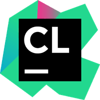
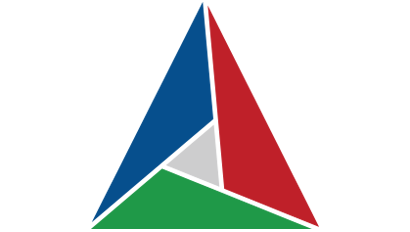

My Expertise
Software Engineer with a demonstrated history of working in the industry and specializing in the C++ object-oriented design and development arena. Skilled in C/C++, Python, UNIX/Linux, Bash Scripting, and Git. Strong engineering professional with a Bachelors of Engineering, and worked as a Graduate Research at the Korea University of Technology & Education, South Korea.
Programming

My main development languages are C/C++ and Python, but I have worked with C#, MySQL, GO and passionate to learn any new language as needed.
Technologies
I feel comfortable doing development in Linux and well acquainted with version control i.e git, Docker, and various compliers suites such as GCC, Clang.
Tools
 Git, VIM, VS Code, CLion, CMake, Docker, you name it, I have used a bajillion tools!